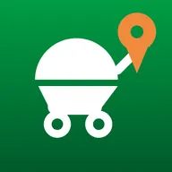
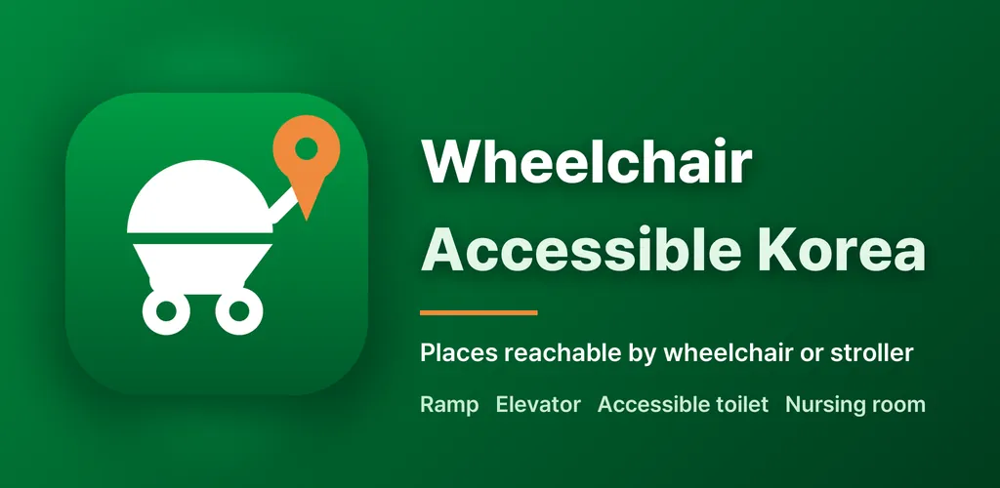
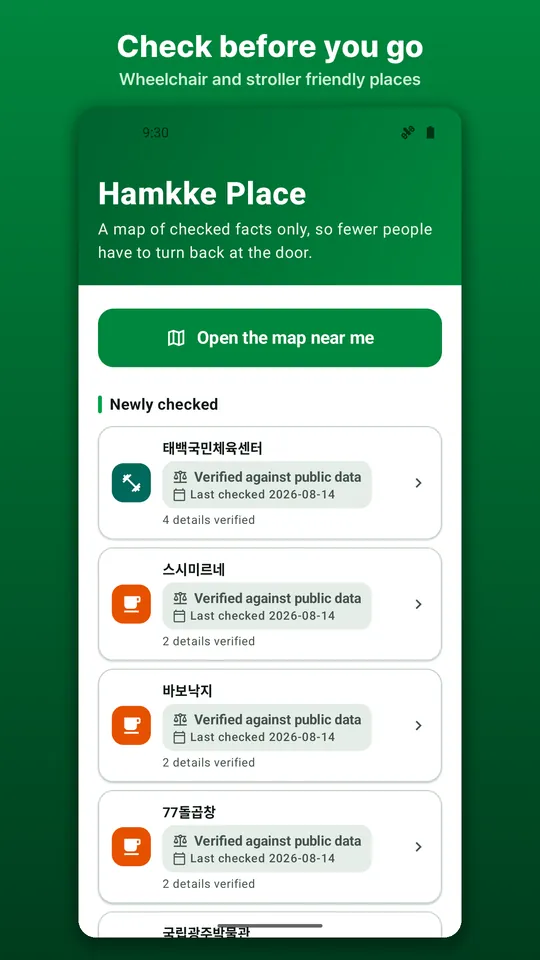
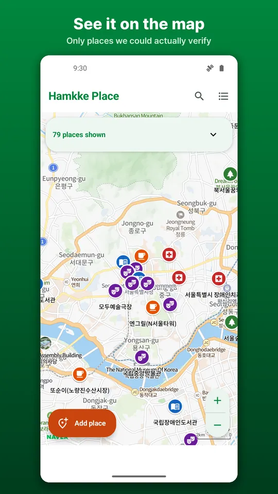
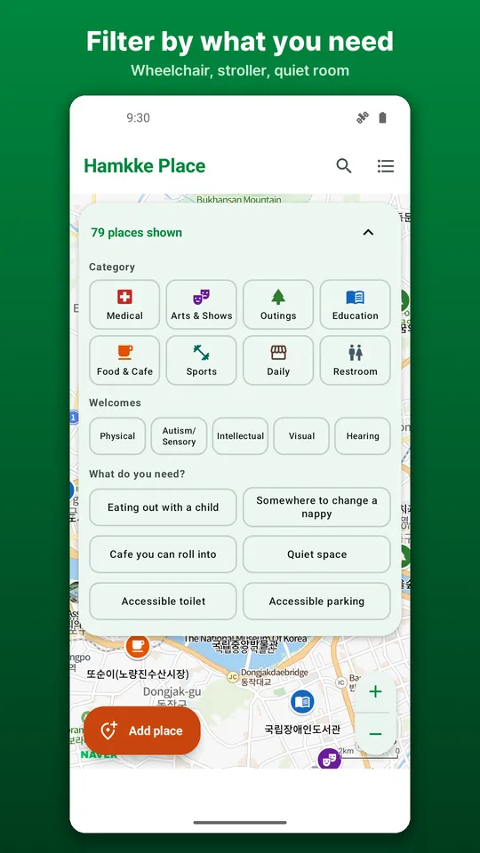
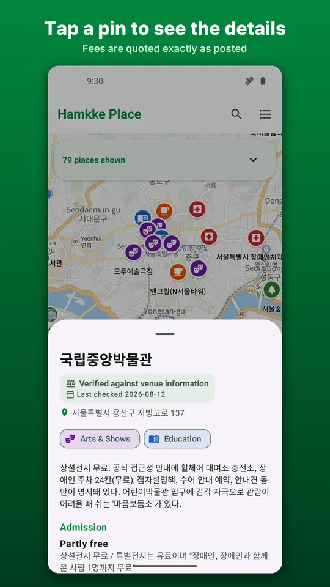
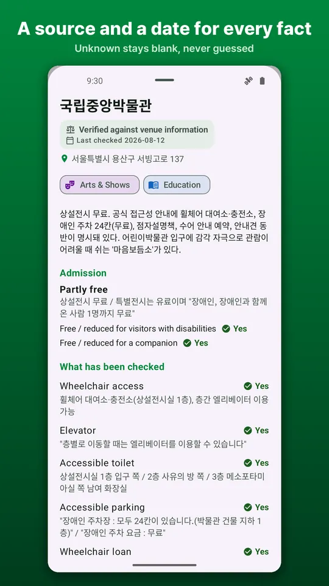
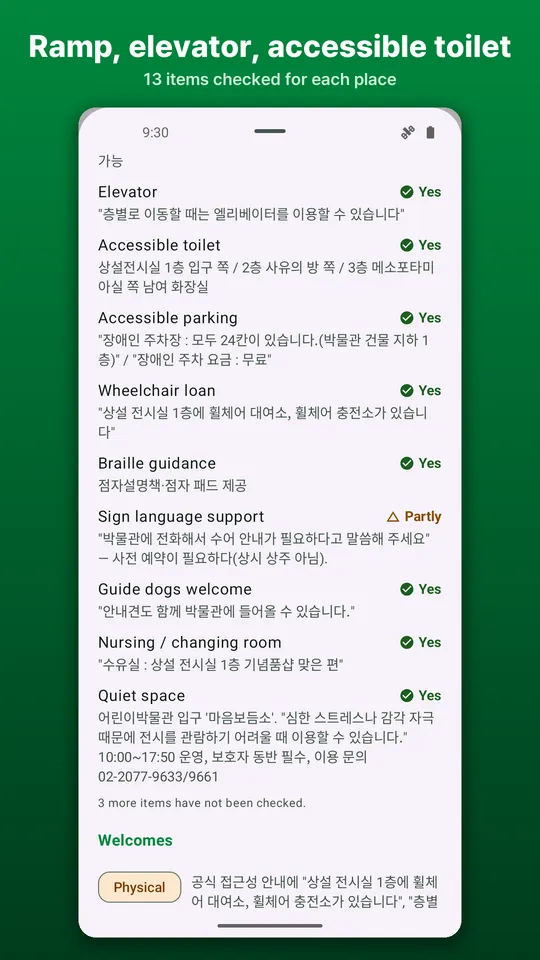

Wheelchair Accessible Korea
Wheelchair and stroller friendly places in Korea, with a source for every fact







About this app
If five steps at the door have ever sent you home, this app exists to prevent that day.
Hamkke Place is an accessibility map for Korea. It answers one question before you leave home: can we actually get in?
Menus are translated. Place details stay in Korean, quoted word for word from the original sources.
Not a government app
Hamkke Place is made by the developer RealTunaLove. It does not represent any government or public agency and is not affiliated with or authorised by one. It only quotes information that public institutions have published, together with the name of and a link to the original source. The list of sources is at the bottom of this description.
Only what has been checked
Each place lists ramps, lifts, accessible toilets, nursing rooms, changing tables, parking, thresholds, braille and sign language guidance. Every item carries a source and the date it was checked.
Unknown stays unknown
Items we could not verify are left blank, never filled with a guess. One invented sentence can send a wheelchair user home from the entrance. So you will see a lot of "not checked". That is a promise.
Admission in the original wording
Fees are kept exactly as the venue wrote them.
Filter the map
Filter places by type (culture, outdoors, medical, toilets and more) and by need: wheelchair, vision, hearing, developmental or stroller. A list view works with screen readers.
Notes from people who went
Leave a visit note with fixed options, so it takes seconds and means the same to everyone. If something differed, tell the developer directly.
Add a place you know
Only what you checked yourself is needed. One line from one person changes someone else's day out.
Please note
Information reflects the date it was checked, and conditions change, so please confirm with the venue before an important visit. This app describes the physical facts of a place. It is not a medical or welfare service and provides no diagnosis.
Original sources quoted in this app
The exact page used for each place can be opened from "Where this came from" on the place screen in the app.
· Korea Tourism Organization, Accessible Travel for All https://access.visitkorea.or.kr
· National Museum of Korea https://www.museum.go.kr
· National Museum of Modern and Contemporary Art https://www.mmca.go.kr
· National Library for Children and Young Adults https://www.nlcy.go.kr
· National Library for the Disabled https://www.nld.go.kr
· Gwacheon National Science Museum https://www.sciencecenter.go.kr
· National Center for Mental Health https://www.ncmh.go.kr
· National Medical Center https://www.nmc.or.kr
· Seoul Grand Park https://grandpark.seoul.go.kr
· Seoul Museum of Art https://sema.seoul.go.kr
· Seoul Metropolitan Library https://lib.seoul.go.kr
· Seoul Botanic Park https://botanicpark.seoul.go.kr
· Seoul Metropolitan Children's Hospital https://childhosp.seoul.go.kr
· Seoul Dental Hospital for the Disabled https://www.sdh.go.kr
· Seoul Western Dental Hospital for the Disabled https://wsdh.go.kr
· Seoul Facilities Corporation, Children's Grand Park https://www.sisul.or.kr
· Sejong Center for the Performing Arts https://www.sejongpac.or.kr
· Seoul Arts Center https://www.sac.or.kr
· Seoul National University Hospital https://www.snuh.org
· Modu Art Theater https://www.moduarttheater.or.kr
Android · free with ads · Developer: RealTunaLove · Store listing in 17 languages
Background story: why I built it